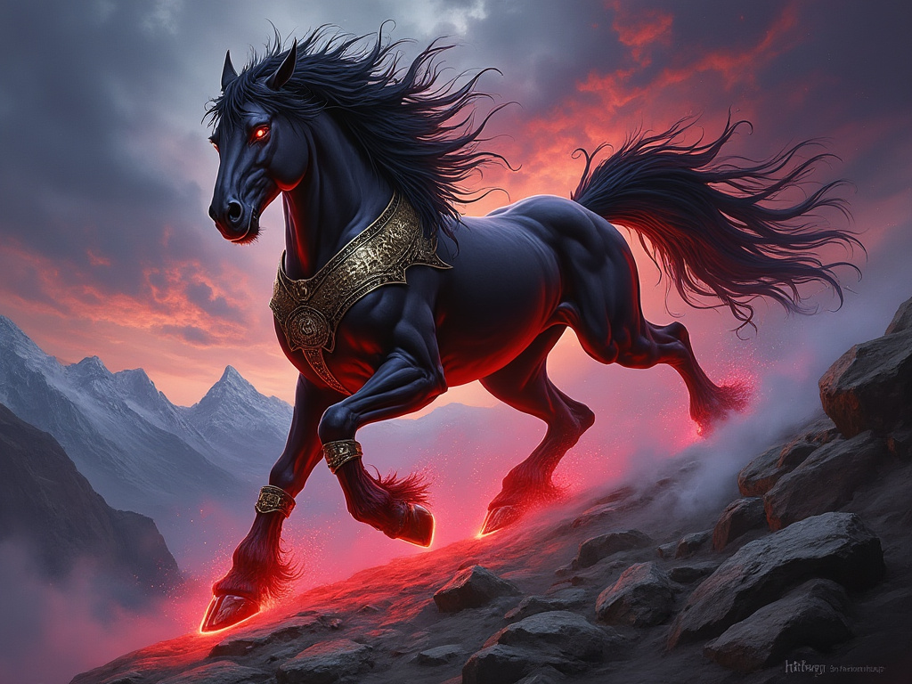

The Cerberus Horse is a majestic and enchanted beast native to the realm of Cerberus. These extraordinary creatures are deeply revered by the people of Cerberus, holding a place of honor even above that of dogs. Renowned for their loyalty, power, hard work, and bravery in the face of giants, Cerberus Horses are respected by all who encounter them.
Legend has it that the bond between the people of Cerberus and these horses runs so deep that their mana has intertwined, resulting in truly magical beings. This connection is evident in the horses' enhanced abilities and supernatural qualities.
Cerberus Horses can be summoned through specific magical means. A summoner with a strong affinity for a particular horse may name and resummon it, strengthening their bond and enhancing communication. The number of horses a caster can bond with is typically limited by their intelligence.
Cerberus Horses excel in mounted combat scenarios. They provide their riders with enhanced mobility, allowing for swift charges, strategic retreats, and devastating attacks. Their ability to leap and maneuver makes them particularly effective against larger foes like giants.
The Cerberus Horse holds immense cultural importance in Cerberus. They are seen as more than mere animals, but as companions, protectors, and symbols of the realm's resilience and strength. The deep connection between these horses and the people of Cerberus is a testament to their shared history and the magical nature of their bond.
When creating a Cerberus Horse for encounters or as a companion, Game Masters can use the following table as a guideline. While this table is derived from the spell used to summon these magical steeds, it can also serve as a tool for creating Cerberus Horses of varying power levels without the use of spells.
For non-spell creation of Cerberus Horses, GMs should mentally substitute "Spell Level" with "Cerberus Horse Power Category." This allows for the creation of Cerberus Horses at different strength levels to suit various encounter needs or to represent horses of different ages and experiences.
| Variable | Category I | Category II | Category III | Category IV |
|---|---|---|---|---|
| Equivalent Spell Level | 3 | 5 | 7 | 9 |
| Duration (if summoned) | Minutes/level | 10 minutes/level | Hours/level | Days/level |
| Size | Large | Large | Large | Large |
| HP per Character Level | 4 | 8 | 16 | 16 |
| Speed per Character Level | 30ft | 40ft | 50ft | 80ft |
| Armor per Character Level | 2 | 3 | 4 | 5 |
| Magic Armor per Character Level | 2 | 3 | 4 | 5 |
| Horse's Charge | +50% attack roll, | +100% attack roll, | +150% attack roll, | +200% attack roll, |
| +200% damage | +300% damage | +400% damage | +500% damage | |
| Bravery Bonus | +20% | +30% | +40% | +60% |
| Jump Size | Large | Huge | Gargantuan | Colossal |
| Perception per Character Level | 4 | 5 | 6 | 7 |
à